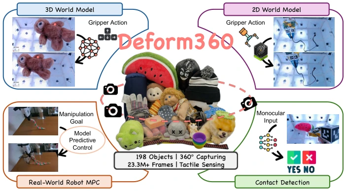
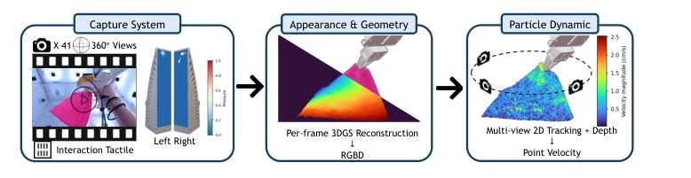
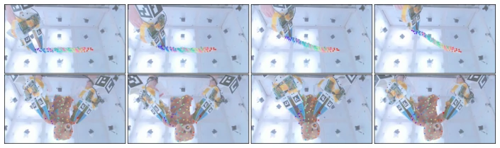
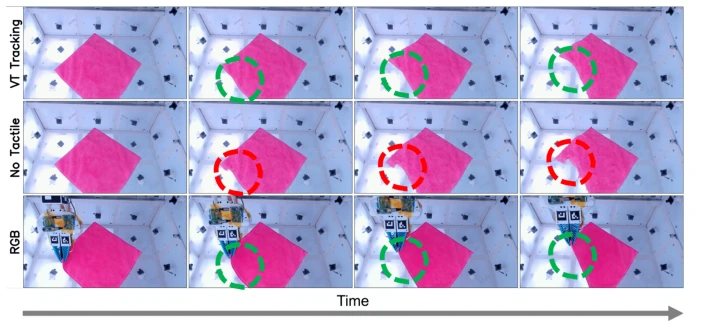
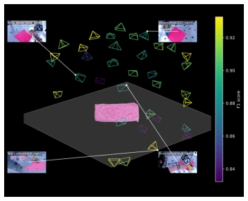
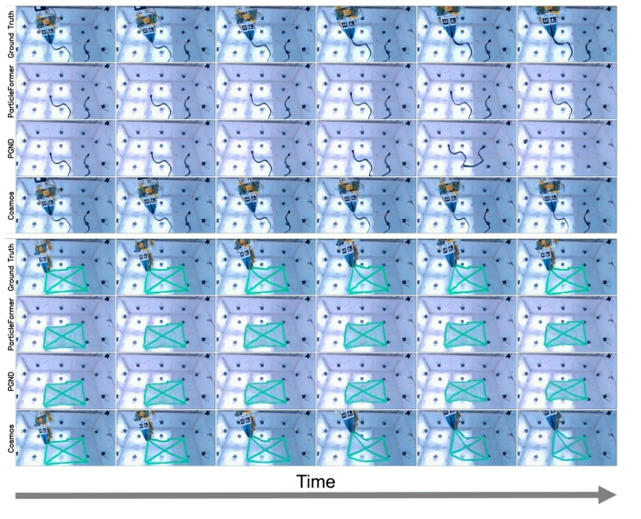
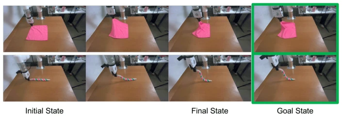
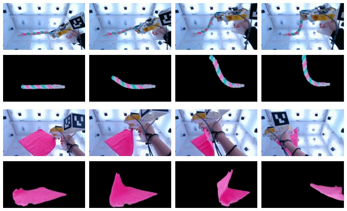
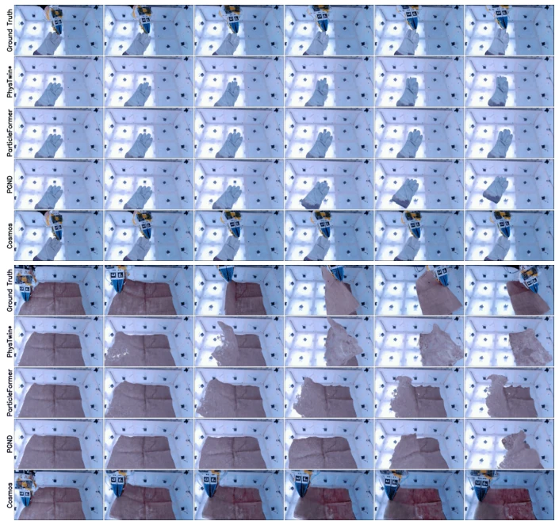
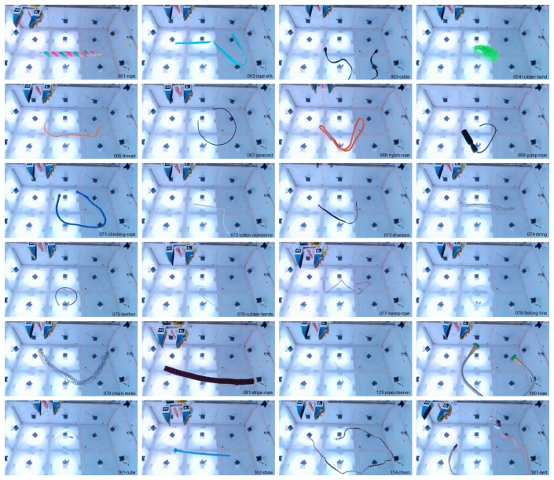

This paper finally turns "toys" into "weapons". Deform360 accumulates 215 hours of real data using 41 cameras and tactile gloves, significantly surpassing existing benchmarks (such as Robo360 [47]). But do not celebrate too early; tactile sensors can only measure normal pressure, tangential slip is invisible, and the plastic material assumption is also limited. 2D video models (Cosmos [51]) win on zero-shot generalization, but reward function design is prohibitively difficult during planning due to lack of explicit geometry. 3D particle models are stable when data is scarce, but generalization is poor. This dataset is a milestone, but still falls short of a universal world model, after all the "messiness" of the real world is much more complex than in simulators, and tactile data quality relies on the no-slip assumption, which is hard to guarantee in actual grasping. Additionally, while 3DGS reconstruction is good, it has high computational cost, and real-time performance is questionable.
研究动机Motivation
可变形物体操控是具身智能的硬骨头，状态空间高维且接触易遮挡。现有数据集要么依赖合成数据 [5, 32]，要么物体单一 [6, 12]，或缺乏高保真 3D 标注与触觉反馈 [47, 52]。缺乏大规模真实数据导致无法系统评估 2D 像素空间与 3D 几何空间模型的优劣。现有工作如 PokeFlex [52] 虽有触觉但规模小，Robo360 [47] 视角多但缺触觉。本文旨在填补这一空白，提供多视角、触觉同步的真实交互数据，以验证世界模型在变形物体上的泛化能力与物理一致性，解决现有基准无法支撑复杂动态建模的问题，为物理先验与数据驱动方法的对比提供公平竞技场，推动具身智能从仿真走向真实。
Manipulation of deformable objects is a tough challenge for embodied intelligence, with high-dimensional state spaces and contact prone to occlusion. Existing datasets either rely on synthetic data [5, 32], or have single objects [6, 12], or lack high-fidelity 3D annotations and tactile feedback [47, 52]. Lack of large-scale real data leads to inability to systematically evaluate the pros and cons of 2D pixel space and 3D geometric space models. Existing works like PokeFlex [52] have tactile but are small scale, Robo360 [47] has many views but lacks tactile. This paper aims to fill this gap, providing multi-view, tactile-synchronized real interaction data to verify the generalization ability and physical consistency of world models on deformable objects, solve the problem that existing benchmarks cannot support complex dynamic modeling, provide a fair arena for comparing physical priors and data-driven methods, and promote embodied intelligence from simulation to reality.

Fig. 1: Overview of Deform360. We collect a massive multi-view visuotactile dataset with 198 deformable objects (a subset is shown), supporting 2D and 3D world models, contact detection, and real-world robot planning tasks.
The overall process is divided into collection and annotation. Collection uses 41 cameras + two-finger tactile UMI gripper. Annotation pipeline decouples geometry and tracking: first use 3DGS to reconstruct high-fidelity geometry frame-by-frame, then use CoTracker3 for multi-view 2D tracking. The innovation lies in introducing tactile signals to optimize physical rationality after lifting 2D trajectories to 3D. Define shape loss, local rigidity loss, smoothness loss, and tactile consistency loss to ensure particles still comply with physical constraints under occlusion. Tactile signals serve as ground-truth contact information, correcting visual tracking errors, achieving markerless high-precision particle trajectory extraction, providing high-quality supervision signals for subsequent world models. Compared to pure visual methods, tactile optimization significantly improves tracking robustness under occlusion, solves the problem of traditional 3DGS lacking temporal consistency, and achieves precise mapping from pixels to physical particles.

Fig. 2: Overview of our annotation pipeline. We convert multi-view video and tactile streams into dense annotations for deformable object dynamics. We first recon- struct high-fidelity dynamic geometry using per-frame 3D Gaussian Splatting. Then, we perform markerless 2D tracking, lift the tracks into 3D, and optimize for temporal and multi-view consistency and physical plausibility.

Fig. 3: Visualization of our particle tracking system across different object categories.

Fig. 4: Benefit of Visuotactile Perception. The three rows compare the warped point clouds, obtained by temporally integrating per-frame tracking results: our full vi- suotactile approach, tracking without tactile optimization, and the RGB ground truth. Our method yields superior tracking accuracy under occlusions caused by the gripper, confirming the advantage of integrating tactile feedback into the tracking pipeline.
The dataset contains 198 objects, 1980 sequences. Baseline comparison includes 2D video models (Cosmos [51]) and 3D particle models (ParticleFormer [27], PGND [86], PhysTwin [30]). Metrics include Chamfer Distance, PSNR, etc. Results found: 3D models perform better under low data volume due to physical priors; 2D models have stronger zero-shot generalization under large-scale pre-training. Tactile fusion reduces tracking error by 5 times. MPC planning experiments prove 3D models can be directly used for real robot control, while 2D models are hard to deploy directly due to visual distribution differences. Reveals the trade-off between structural priors and scalability. PhysTwin is better in reconstruction, Cosmos is better in texture, but 3D is more reliable in planning. Experiments validate the effectiveness of tactile data for contact prediction, providing a clear direction for future world model design.

Fig. 5: A visualization of the prediction performance from different camera views.

Fig. 6: Visualization of Multi-Object Generalization. We show the predicted fu- ture frames for the cable (top) and bubble-wrap (bottom) objects, comparing different world models under the zero-shot object generalization setting.

Fig. 7: Real-world Robot Planning with Model Predictive Control. We de- ploy learned models from Deform360 in an MPC framework to manipulate various deformable objects toward the goal state.
其他图片Other Figures

Fig. 8: Visualization of dynamic reconstruction results from novel viewpoints and dif- ferent temporal steps.

Fig. 9: Visualization of Multi-Episode Generalization. We show the predicted future frames for the glove-cloth (top) and sack-cloth (bottom) objects, comparing different world models under the episode generalization setting.

Fig. 10: Visualization of 1D Deformables. Object names are marked at the lower right corner of each image.